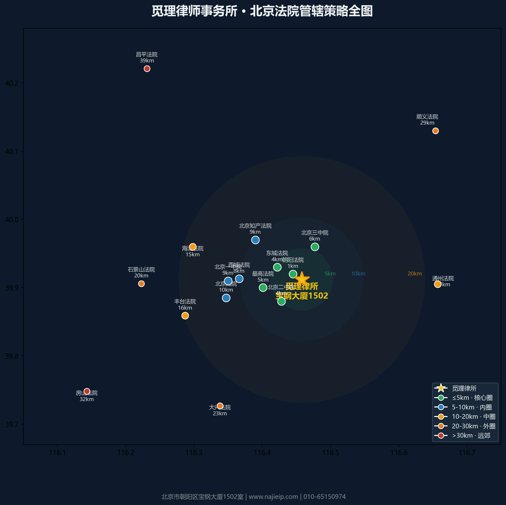

觅理律师事务所 · 以宝钢大厦1502室为中心，17个法院五圈层分布

觅理律所位于朝阳区宝钢大厦（CBD核心区），对北京东部和南部法院具有天然地缘优势。核心圈涵盖朝阳法院、二中院、三中院、最高法院，可在30分钟内到达。
知识产权案件专属北京知产法院（≈9km），行政诉讼可由一中院或知产法院管辖，均在10km范围内。对于大兴、顺义、房山、昌平等远郊法院，单程40-90分钟，需安排专门开庭日。
在民事诉讼中，一般地域管辖以被告住所地法院为原则。知识产权侵权诉讼可选择侵权行为地或被告住所地法院。在确定管辖策略时，建议结合案件标的、对方当事人所在地、案件类型综合权衡。